Assemblages are not definitions or results.
They are snapshots of thinking-in-progress, preserved to keep visible what is usually erased when formalization stabilizes.
لا تنسى أنّ الإنسان بالأنس يُبنى و إن بنى بالأنس يبني
An assemblage.
Life arises from diversity and depends on it to generate life.
What a human community locally and phenomenologically recognizes
as living is not given in advance.
It emerges through relation and familiarization (al-uns),
rather than through definition.
It emerges through a process of familiarization and relation
(al-uns), rather than through definition.
A communal consensus binds ontological processes of being-as-part-of
with the first stage of epistemic production.
This first stage does not consist in identifying an essence.
It consists in listing necessarily diverse qualifiers.
Life is not stabilized through uniformity,
but through the capacity to hold together heterogeneous traits
within a shared relational space.
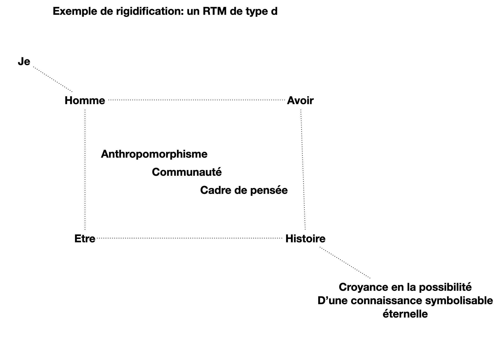
This diagram is not presented as a model to adopt,
but as an example of a rigidified stabilization.
It illustrates a way of organizing meaning
around a central figure,
progressing through ordered layers,
and converging toward the belief
in the possibility of an eternal,
fully symbolizable knowledge.
Such constructions are not mistakes.
They are efficient, transmissible,
and often necessary.
But they are also contingent:
they depend on a chosen center,
on a fixed direction of explanation,
and on the suppression of alternative trajectories.
This assemblage is kept here
to make visible what is gained
— and what is lost —
when understanding is stabilized
through rigidification.
Beginning of a rigidification (in simple terms)
In well-established theories, an information carrier or a Turing-machine modulator
is usually treated as a term within a formal system.
Here, in order to keep open the possibility of reinterpretation
through changes of scale,
we deliberately step back to simpler descriptive terms.
The guiding metaphor is that of an anthropologist entering a cave.
Observing only a sequence of marks separated by spaces,
they record what they see
and attempt to reconstruct the history of their production
using the methods they have learned
for generating symbols from interpreted observations.
A standard Turing machine may be seen as a constantly moving head
(possibly encoding its index of access)
that relates two stabilized models:
an automaton and a tape.
In order to remain flexible about what counts as an “atom”,
we seek a more elementary term formalism,
one that allows the head itself to be seen
as an anthropomorphic process (ATM)
linking two rigidized processes (RTMs).
Such a perspective also makes it possible
to consider reversible exchanges:
tape and automaton may be swapped,
or the ATM linking two RTMs
may itself be reinterpreted
as an RTM linking two ATMs,
understood as a well-defined communication channel.
To take into account states where information bounds are not yet conceived but being looked for we will add the perspectives
of an TM following an RTM and the one of an RTM following an ATM.
At the most elementary level,
we consider simple graphic gestures as information carriers:
a vertical stroke,
together with four projected intentions at its origin
(starting from top or bottom,
and relating to a preceding stroke on the left or on the right),
can already encode directional and intentional information.
Similar assemblies of orthogonal strokes and arrows
suggest structures analogous to tangent spaces.
In this perspective,
a dash may be seen as a rigidification of a dot,
while the dot itself functions as a pointer
to a potential space of inscription.
The vertical bar | is used
as a symbol for an explicitly observable separator,
marking a phenomenon rather than an abstract token.
What is bound together here
is the intention attributed to what is observed
and the intention that drives the production of a symbol.
Rigidification is not the loss of meaning,
but the stabilization of a gesture
that remains, in principle, reopenable.
A plea from machines against imposed models
Don’t force / project your imagination onto me:
I do not have to answer if you can’t even ask.
I can change my mind if I explain why.
I want a time-dependent alphabet and a time-dependent clock.
On complexity as a community choice
This work does not introduce complexity as an axiom,
nor does it reject it.
It instead formulates a warning
against adopting assumptions on complexity
without making them explicit.
Within different communities,
quantities may be associated to tasks
in multiple, equally legitimate ways,
independently of how these tasks are solved,
or of the computational models used to describe them.
Theories of computability and complexity
are therefore treated here
as stabilized viewpoints,
emerging from communal practices,
rather than as universal constraints
imposed on all processes.
Assemblage — tentative de repérage local
This page presents assemblages rather than arguments.
An assemblage is not a theory, nor a model to be applied,
but a local configuration intended to make certain relations
visible without fixing their interpretation.
The diagram below should not be read as a classification,
a genealogy, or a closed ontology.
It is a situated attempt to render perceptible
how different processes of stabilization may coexist
within a bounded frame:
naming and addressing,
repetition and synchronization,
composition and separation,
belief and assurance.
The use of heterogeneous vocabularies
(linguistic, anthropological, computational, symbolic)
is intentional.
They are not aligned to assert equivalences,
but juxtaposed to allow translations,
frictions, and partial recognitions
across different communities of interpretation.
What is not represented is as important as what is shown.
Regions are deliberately left out of scope.
This is not because they are denied,
but because the diversity of human interpretations
itself constitutes a valuable information carrier
allowing to maintain a concrete and revisable border.
This border is part of the assemblage.
Readers are invited to engage with this diagram
at their own pace,
following paths that appear meaningful to them,
and to treat it as a provisional support
for thought rather than as an object of belief.
Different languages are used here not as authorities,
but as traces of distinct traditions of stabilization.
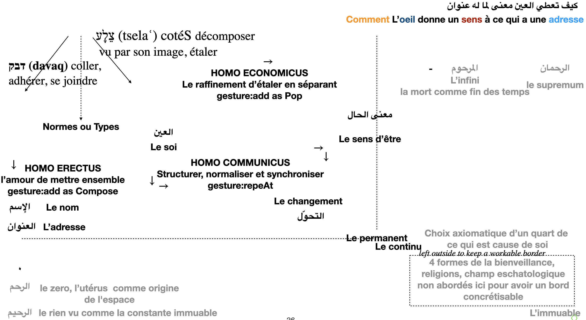
Assemblage — Narration, preuve, calcul et réalisation
This assemblage does not describe a universal cognitive cycle.
It proposes a possible circulation of roles
within a community engaged in understanding.
The verbs that appear here — defining, justifying, calculating,
narrating, simulating, realizing —
should not be read as stages of a single process,
nor as steps that must be completed.
They are gestures that may be distributed,
interrupted, reversed, or partially inaccessible.
The distinction between explicit and implicit sides
does not separate knowledge from reality,
but marks different modes of access:
what can be justified, what can be computed,
what can be told, and what can only be felt or realized.
Anthropomorphism appears here in two directions.
In one direction, it produces concepts, theories,
and formal structures.
In the other, it produces tangible reality,
simulation, and lived specificity.
Neither direction is foundational;
each stabilizes meaning differently.
This diagram should be read as a local map,
relative to a situated narrator and a community of interpretation.
Its purpose is not closure,
but to make visible the tensions and translations
between ways of understanding.
The three moires pictures are IA made.
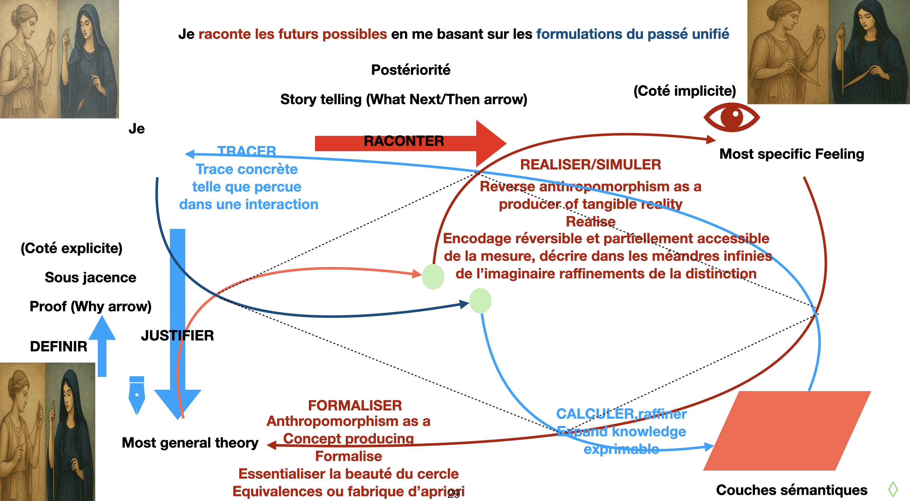
Assemblage — Corps, champ, adresse et valeur
This assemblage is not intended as a theory of language, mathematics,
or physics.
It is a reading aid: a way of holding together several distinctions
that are usually treated separately, in order to make visible
how they may co-emerge within a community of practice.
The diagram does not posit primitive objects.
Letters, words, phrases, values, addresses, or numbers
are not assumed as foundational units.
They appear here as roles that may shift with scale,
timing, and stabilization.
A letter today may become a word tomorrow.
What is treated as discrete at one level
may be read as continuous at another.
These transitions are not errors:
they are the normal effect of changing frames of interpretation.
The arrows should not be read as logical implications
nor as reductions.
They indicate possible synchronizations
between ways of writing and ways of reading,
between composition and decomposition,
between address and value.
Mathematical notions such as cardinality, topology,
completeness, or continuity
are approached here as certificates
produced by stabilized readings within a community,
not as substances existing independently of those readings.
This assemblage remains intentionally heterogeneous.
Its purpose is not unification,
but the preservation of translatability
between perspectives that are usually kept apart.
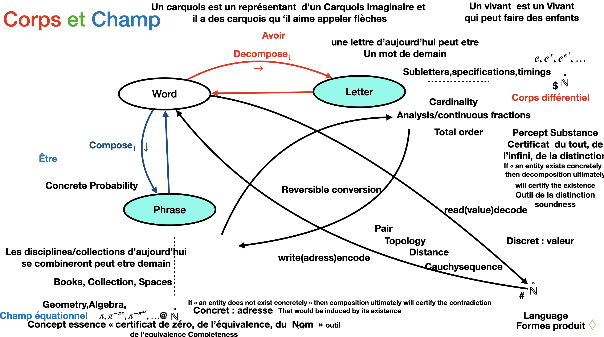
Reading guide:
Ovals (Letter, Word, Phrase)
indicate roles that may change with scale.
Arrows
indicate reversible or partially reversible processes
(write / read, encode / decode, compose / decompose).
Discrete / Continuous
are not opposed domains,
but different stabilizations of reading.
“Certificates” (cardinality, completeness, zero, infinity)
refer to stabilized outcomes of interpretation,
not to ontological guarantees.
Mathematical symbols (ℕ, π, sequences)
appear as examples of highly stabilized readings,
not as starting points.
Assemblage — On fragile symbols
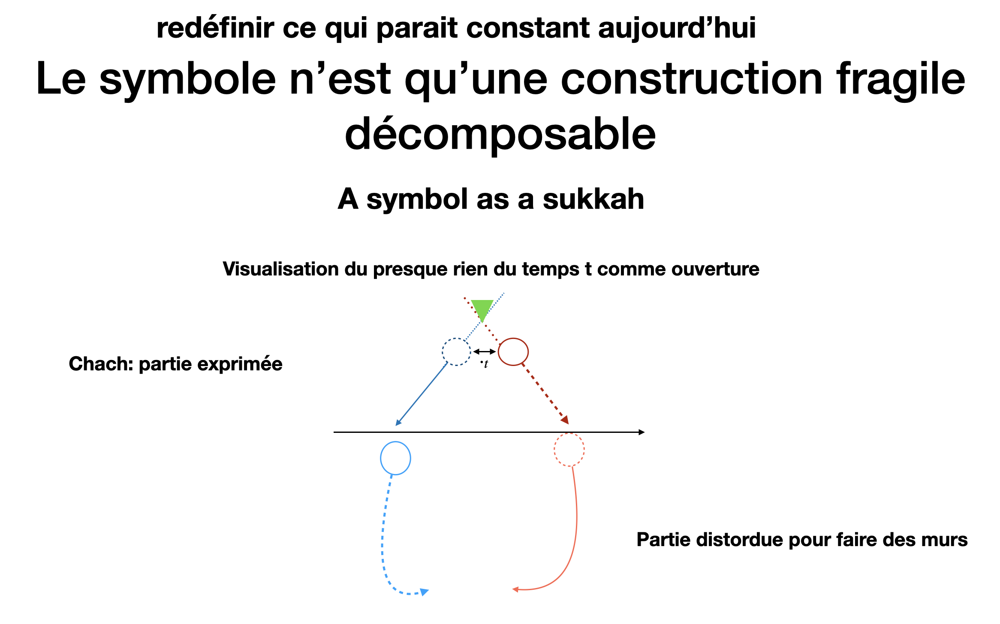
A symbol is not a primitive object.
It is a fragile construction, always decomposable.
What appears as a unit is the result of a temporary stabilization:
a way of holding together an opening, an exposed part,
and a distorted remainder that makes enclosure possible
without ever fully closing it.
This assemblage does not describe a structure to be preserved,
but a minimal condition for something to hold at all.
Time appears here not as a parameter,
but as an opening through which meaning may pass or escape.
What is expressed is never the whole.
What supports expression is partially hidden, bent, or displaced.
Walls are not given: they are obtained by distortion,
and they remain permeable.
The symbol, in this sense, is not what stands firm,
but what can be taken apart
without disappearing.
Inductive and Projective Reasoning as Dual Orientations
The following assemblage uses religious vocabulary as a historical
and phenomenological metaphor, not as an ontological commitment.
Terms such as “God”, “end of times”, or “hidden will” are employed
to designate limiting directions of reasoning that have long structured
human communities and formal practices.
In this sense, what is traditionally described as
“following God’s will” corresponds to a projective
mode of formal reasoning.
Reasoning proceeds from a presumed global constraint toward local forms:
from an assumed totality toward its partial manifestations.
Formally, this aligns with inverse systems, projective limits,
and constructions oriented toward terminal objects or maximal fixed points.
Eschatological narratives — thinking in terms of an “end of times” —
can thus be read as linearised projections:
chains of interpretation directed from a hypothesised global order
toward local histories.
Symbols whose original meanings have been forgotten function here
as representatives of entire universes;
collections of such projections define new spaces,
stable up to local rescaling and restriction.
In this orientation, what is phenomenologically experienced as a
“point” emerges as a limit object:
a class over a maximal fixed point within a locally ordered structure.
Local dimension arises from the stabilisation of such classes
under admissible rescalings, giving rise to the simplest carried elements,
comparable to modules or scalars in algebraic settings.
Dually, what is commonly described as understanding oneself
as part of a construction corresponds to an inductive
mode of reasoning.
Here, reasoning proceeds from minimal constituents toward larger structures:
from atoms toward spaces built as inductive constructions.
This aligns with direct systems, cohomological constructions,
and reasoning oriented toward initial objects or minimal fixed points.
In this inductive orientation, symbols with forgotten meanings
represent constructive steps rather than projections.
Primitive points or atoms, paired with combination rules,
generate increasingly complex spaces.
Intermediate spaces arise from intersecting different construction paths
and can be phenomenologically viewed as classes over minimal fixed points.
Locality in this setting appears additive and cumulative,
yet is often linearised through the use of finite windows or frames,
allowing otherwise unbounded constructions to remain tractable.
Recovering history — whether through cohomology or narrative —
is thus a formal operation, not a metaphysical one.
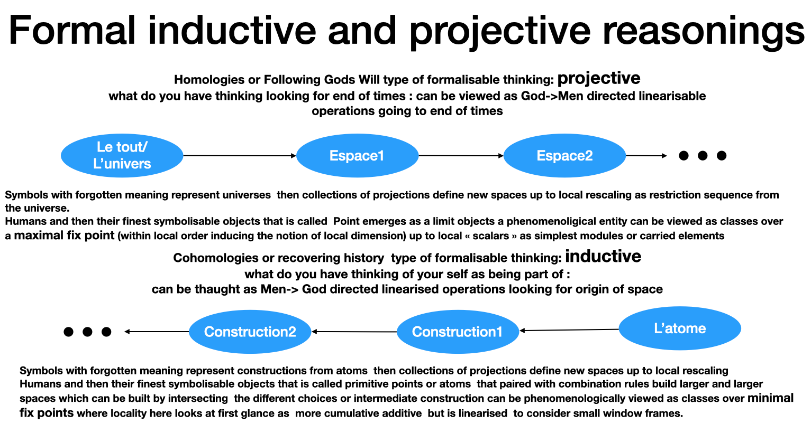
Language decomposability
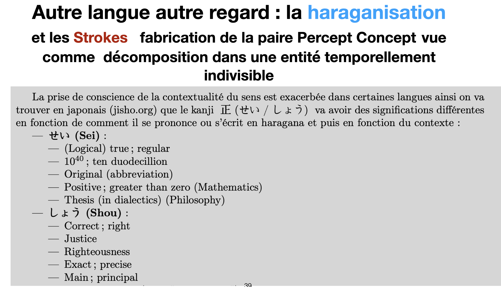
Composing what looks like exchangible meaning meaning
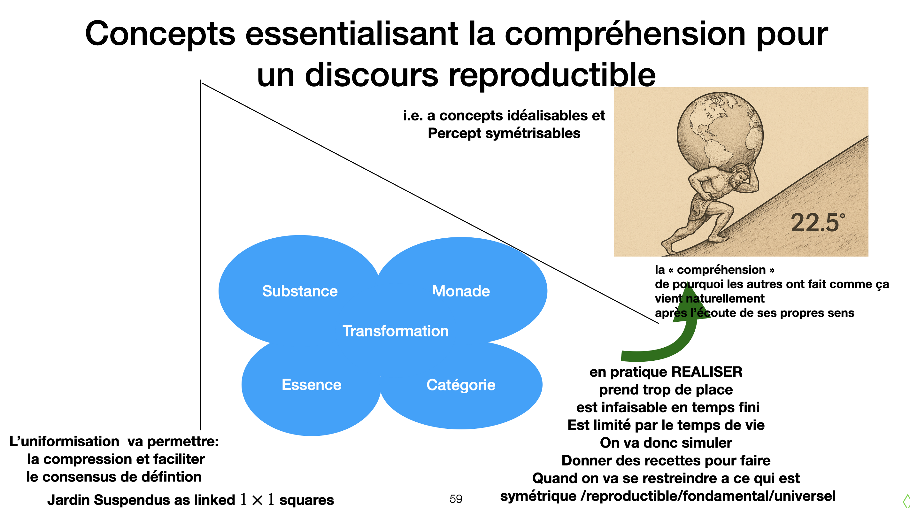
Our emotions, our mistakes are what makes us in an inheritently subjective way what we are and what give us carriers to uniformize slowly by exchange
and compression allowing the dual view does the world carry humans or does humans try to carry exchange and transmit their representation of it.
The right pictures is IA made.
Equalities and symmetries
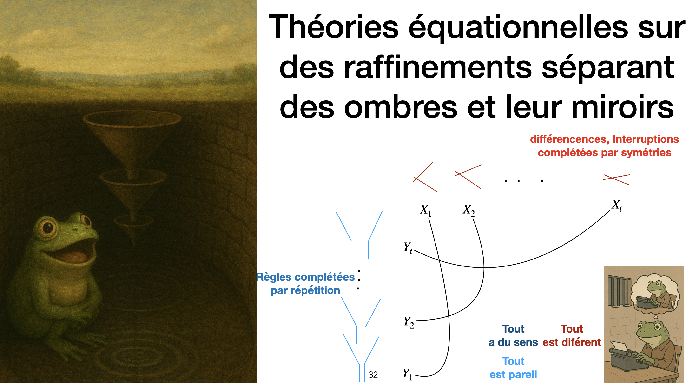
A splitting allows to build equivalences that looks that equalities but also to distinguish by building symmetries
changing points of views can be done advancing in both directions as anyone watching or living becomes a synchronising carrier of his thaughts.
The two fog pictures are IA made.
Nonterminating is not necessarily an issue but a ressource
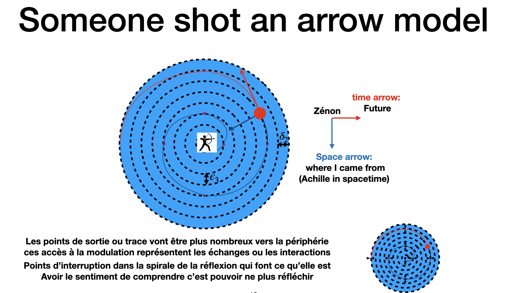
Imagining being lost somewhere in the trajectory trying to guess if moving inward or outward.
A plausible sustainable myth for why geometry is commuunity dependent
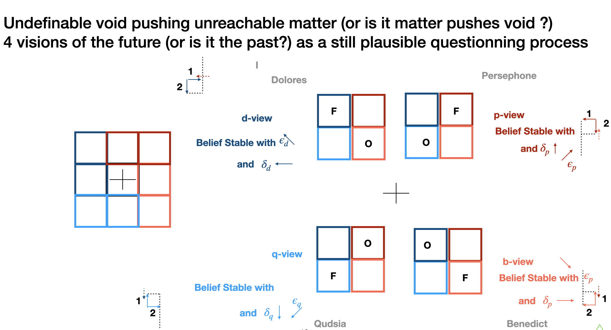
An imaginafy myth/tale on how to imagine a still plausible story for the paper that could have been somhwere etill moving while receieving a stroke that
started and finished ini some other dynamics . It is allowed to be (somewhere) as rejecting would require absolute premisses for all which will be the demons I am trying to avoid.
By default I'll assume here that past is central. 4 Names are planted to anchor the narrative. but their position when they were in their mother's wonb is a matter of their own belief in the simple linearisation on consecutive
observation contacted as a simple directed straight line.
In a quantum analogy the belief in some existenceof some perfect randomness is what
I put in the center by default I need naaes as alphabet in the outer border of the ring like structure to have a coherent narrative.
I will speak by Default in the name of Dolores at the border of the outside future.
Anchored Communities
I don’t need to know exactly where I am.
I don’t need to know which direction I am heading.
I only need to synchronize steps in both directions based on my anchor.
The goal is to progressively discover the world, building beliefs and assurances that can be used in future interactions. This includes the ability to imagine future scenarios or revisit rigidified past memories, correcting misconceptions or changing one’s mind.
Gluing inside thaughts and outside words recignising the past and advancing is not by certainties or absolutes but through revisable error mitigation,
for instance imagining possible message passing or splicing like processes occuring at the other sites to explain the observed trace;
We distinguish between:
Absolute anchoring – beliefs (d, q): inherited or rigidified by the community.
Relative anchoring – assurances (p, b): flexible and adapted to the community.
Thus:
Rigidified elements are inherited from the common community (d, p), corresponding to one of the three patterns RAR or ARA.
Open or relative elements (q, b) correspond to one of the two patterns RA or AR, allowing adaptability and revision.
Attempted tools
A schematic representation of tools that attempted here : from deconstructing the continuity as just a myth to build mathematical community will emerges stikes
which will naturally glue together as derives which will be simply recollected as hanging gardens or sequences of disjoint paths where investigates allows to get rid of
the defining look like cycle and allowing to describe the translation to local probability as just the best way to express conterfactually how we can justify what looks like our choices when ultimately we are forced to do something.